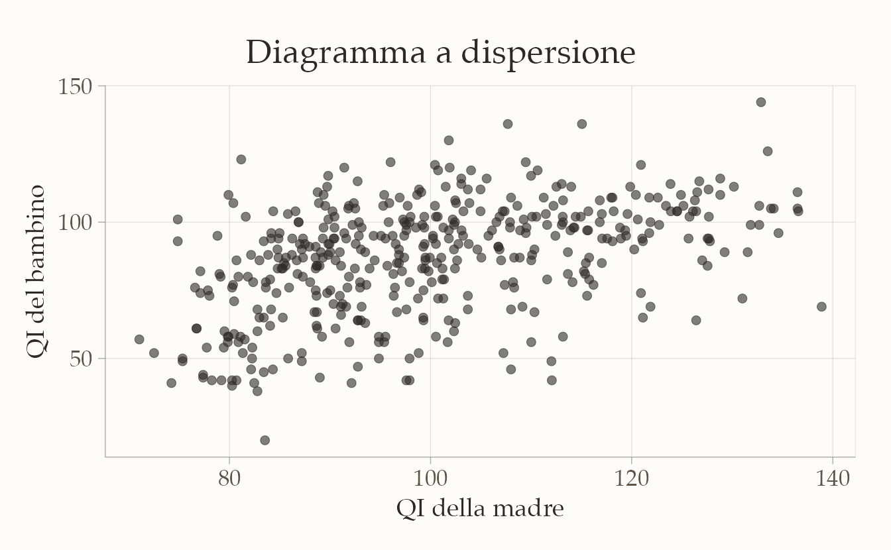
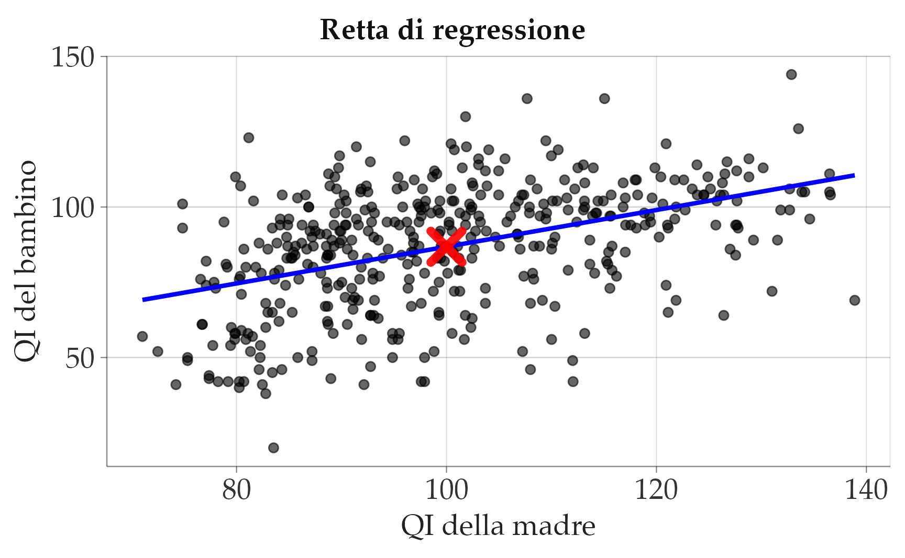
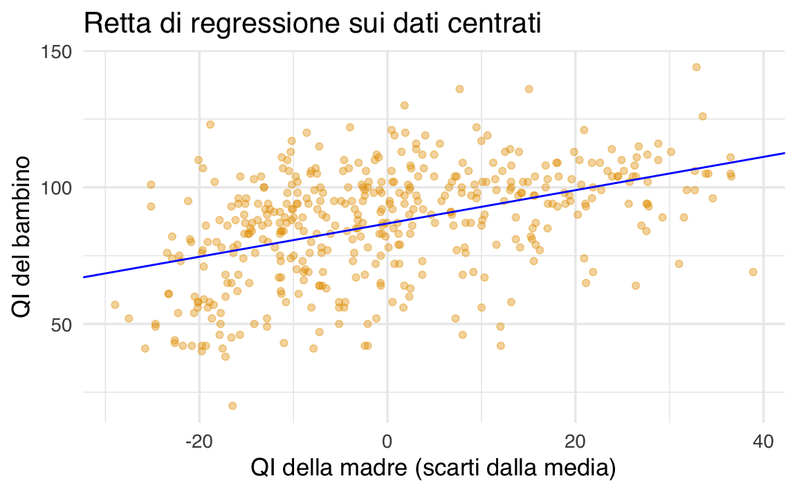
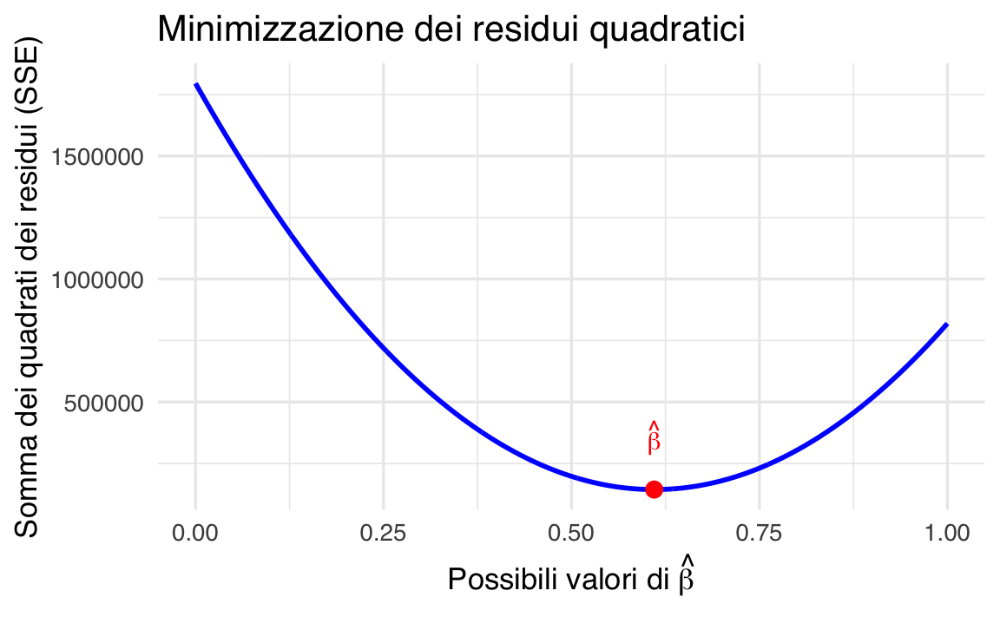

here::here("code", "_common.R") |>
source()
# Load packages
if (!requireNamespace("pacman")) install.packages("pacman")
pacman::p_load(broom)55 La regressione lineare bivariata: un approccio frequentista
In questo capitolo imparerai a:
- comprendere il funzionamento del modello lineare secondo l’approccio frequentista;
- stimare i coefficienti del modello utilizzando il metodo dei minimi quadrati e interpretarli correttamente;
- valutare la qualità del modello attraverso l’indice di determinazione (\(R^2\)).
Prerequisiti
- Leggere il capitolo Basic Regression di Statistical Inference via Data Science: A ModernDive into R and the Tidyverse (Second Edition).
- Consulta l’appendice Capitolo 85 per un’introduzione alle funzioni lineari.
- Leggere Navigating the Bayes maze: The psychologist’s guide to Bayesian statistics, a hands-on tutorial with R code (Alter et al., 2025).
- Leggere il capitolo Linear Statistical Models (Schervish & DeGroot, 2014).
Preparazione del Notebook
55.1 Introduzione
La regressione è un metodo fondamentale che consente ai ricercatori di riassumere come le previsioni o i valori medi di una variabile risultato (dipendente) variano in funzione di un insieme di predittori (indipendenti). Grazie alla sua versatilità, la regressione è utilizzata in un’ampia gamma di contesti, dai modelli predittivi alla valutazione degli effetti causali.
Secondo Gelman et al. (2021), i principali utilizzi della regressione includono:
-
Previsione: Modellare osservazioni esistenti o prevedere nuovi dati, sia continui che categoriali.
- Ad esempio: prevedere punteggi futuri in un test, monitorare il benessere psicologico in uno studio longitudinale o classificare individui in base alla probabilità di successo in un compito cognitivo.
-
Esplorazione delle associazioni: Quantificare il grado di relazione tra una o più variabili indipendenti e un risultato.
- Ad esempio: studiare i tratti di personalità associati alla resilienza allo stress, analizzare la relazione tra stili di attaccamento infantile e capacità relazionali in età adulta, o valutare l’impatto di fattori socio-economici sullo sviluppo cognitivo nei bambini.
-
Estrapolazione: Generalizzare i risultati osservati in un campione a una popolazione più ampia.
- Ad esempio: stimare l’efficacia di una terapia testata su studenti universitari per la popolazione generale, oppure prevedere l’impatto di un intervento scolastico su un intero distretto partendo dai risultati osservati in alcune scuole.
-
Inferenza causale: Stimare gli effetti di un trattamento o intervento.
- Ad esempio: valutare l’efficacia di un programma di mindfulness sui livelli di ansia, stimare l’impatto di una tecnica psicoterapeutica per il disturbo post-traumatico da stress o determinare l’effetto di un intervento educativo su una popolazione diversificata.
In tutti questi contesti, è cruciale che il modello includa tutte le variabili rilevanti. Ad esempio, in uno studio sull’efficacia di una terapia per la depressione, fattori come età, condizioni di salute preesistenti e supporto sociale devono essere inclusi nel modello per evitare conclusioni fuorvianti.
55.1.1 Approccio frequentista
I modelli lineari hanno una lunga storia nella statistica. Come riportato da Stigler (1986), il metodo dei minimi quadrati per adattare un modello di regressione lineare bivariata fu introdotto nel XVIII secolo per problemi di analisi dei dati in astronomia. Ad esempio, gli astronomi lo utilizzavano per determinare il moto della Luna o per modellare i movimenti non periodici di Giove e Saturno. In quel contesto, l’omogeneità dei dati raccolti direttamente dagli astronomi favorì l’adozione di questi metodi, in netto contrasto con le scienze sociali, dove la variabilità dei dati raccolti ritardava l’adozione della regressione.
55.1.2 Il modello lineare bivariato
Nel contesto frequentista, il modello di regressione lineare bivariata consente di predire una variabile continua \(y\) sulla base di un singolo predittore continuo \(x\). La relazione tra le due variabili è espressa dall’equazione della retta di regressione:
\[ y_i = a + b x_i + e_i, \quad i = 1, \dots, n, \tag{55.1}\]
dove:
- \(a\) è l’intercetta (valore atteso di \(y\) quando \(x = 0\)),
- \(b\) è la pendenza della retta (coefficiente di regressione, che misura il cambiamento atteso in \(y\) per unità di incremento in \(x\)),
- \(e_i\) è l’errore residuo (la differenza tra il valore osservato di \(y_i\) e il valore predetto dal modello).
55.1.2.1 Aspetti principali
Stima dei coefficienti
I coefficienti \(a\) e \(b\) vengono stimati mediante il metodo dei minimi quadrati, che minimizza la somma dei quadrati degli errori residui (\(\sum e_i^2\)).-
Interpretazione dei coefficienti
-
\(a\): rappresenta il valore medio previsto di \(y\) quando \(x = 0\).
- \(b\): indica la variazione media prevista in \(y\) per ogni unità di variazione in \(x\).
-
\(a\): rappresenta il valore medio previsto di \(y\) quando \(x = 0\).
-
Valutazione del modello
La bontà di adattamento del modello viene valutata attraverso:- L’indice di determinazione (\(R^2\)), che misura la proporzione della varianza di \(y\) spiegata dal modello.
- L’analisi dei residui, che verifica la presenza di eventuali pattern non catturati dal modello.
Questo capitolo illustrerà come applicare e interpretare il modello di regressione bivariata, collegandolo successivamente al modello lineare multiplo e agli approcci più avanzati per l’inferenza causale.
55.2 La Predizione dell’Intelligenza
Nella presente discussione, esamineremo i dati kidiq che consistono in una raccolta di dati provenienti da una survey su donne adulte americane e i loro figli, selezionati da un sotto-campione del National Longitudinal Survey of Youth (Gelman et al., 2021).
Nello specifico, ci concentreremo sulla relazione tra il punteggio di intelligenza del bambino (kid_score) e quello della madre (mom_iq). Ci proponiamo di valutare se e in quale misura l’intelligenza della madre possa prevedere l’intelligenza del bambino. Per fare ciò, inizieremo ad importare i dati nell’ambiente R.
# Anteprima dei dati
head(kidiq)
#> kid_score mom_hs mom_iq mom_work mom_age
#> 1 65 1 121.12 4 27
#> 2 98 1 89.36 4 25
#> 3 85 1 115.44 4 27
#> 4 83 1 99.45 3 25
#> 5 115 1 92.75 4 27
#> 6 98 0 107.90 1 18Un diagramma a dispersione per i dati di questo campione suggerisce la presenza di un’associazione positiva tra l’intelligenza del bambino (kid_score) e l’intelligenza della madre (mom_iq).
ggplot(kidiq, aes(x = mom_iq, y = kid_score)) +
geom_point(alpha = 0.4) +
labs(x = "QI della madre", y = "QI del bambino") +
ggtitle("Diagramma a dispersione")
55.3 Stima del modello di regressione lineare
Calcoliamo i coefficienti della retta di regressione utilizzando la funzione lm.
# Modello di regressione lineare
mod <- lm(kid_score ~ mom_iq, data = kidiq)# Coefficienti stimati
coef(mod)
#> (Intercept) mom_iq
#> 25.80 0.61Ci sono però infinite rette che, in linea di principio, possono essere usate per “approssimare” la nube di punti nel diagramma a dispersione. È dunque necessario introdurre dei vincoli per selezionare una di queste possibili rette. Il vincolo che viene introdotto dal modello di regressione è quello di costringere la retta a passare per il punto \((\bar{x}, \bar{y})\).
# Calcola le medie per mom_iq e kid_score
mean_x <- mean(kidiq$mom_iq, na.rm = TRUE)
mean_y <- mean(kidiq$kid_score, na.rm = TRUE)
# Aggiungi il punto medio al grafico
ggplot(kidiq, aes(x = mom_iq, y = kid_score)) +
geom_point(alpha = 0.4) +
geom_smooth(method = "lm", se = FALSE, color = "blue") +
annotate(
"point", x = mean_x, y = mean_y, color = "red", size = 5,
shape = 4, stroke = 3) +
labs(x = "QI della madre", y = "QI del bambino") +
ggtitle("Retta di regressione")
Una retta di regressione che passa per il punto medio \((\bar{x}, \bar{y})\) (che rappresenta il centro di massa dei dati) è preferibile dal punto di vista statistico poiché minimizza la somma dei quadrati degli errori residui.
Il campione è costituito da \(n\) coppie di osservazioni (\(x, y\)).
\[ \begin{array}{cc} \hline x_1 & y_1 \\ x_2 & y_2 \\ x_3 & y_3 \\ \vdots & \vdots \\ x_n & y_n \\ \hline \end{array} \]
Per ciascuna coppia di valori \(x_i, y_i\), il modello di regressione si aspetta che il valore \(y_i\) sia associato al corrispondente valore \(x_i\) come indicato dalla seguente equazione
\[ \begin{equation} \mathbb{E}(y_i) = a + b x_i , \end{equation} \tag{55.2}\]
ovvero:
\[ \begin{array}{ccc} \hline x_i & y_i & \mathbb{E}(y_i) = a + b x_i \\ \hline x_1 & y_1 & a + b x_1 \\ x_2 & y_2 & a + b x_2 \\ x_3 & y_3 & a + b x_3 \\ \vdots & \vdots & \vdots \\ x_n & y_n & a + b x_n \\ \hline \end{array} \]
I valori \(y_i\) corrispondono, nell’esempio che stiamo discutendo, alla variabile kid_score. I primi 10 valori della variabile \(y\) sono i seguenti:
kidiq$kid_score[0:10]
#> [1] 65 98 85 83 115 98 69 106 102 95Per fare riferimento a ciascuna osservazione usiamo l’indice \(i\). Quindi, ad esempio, \(y_2\) è uguale a
kidiq$kid_score[2]
#> [1] 98Il modello di regressione lineare bivariata, rappresentato dall’equazione \(y_i = a + b x_i + e_i\), descrive la relazione tra le variabili \(x\) e \(y\), dove \(y\) è la variabile dipendente (nel nostro esempio, la variabile kid_score) e \(x\) è la variabile indipendente (nel nostro esempio, la variabile mom_iq).
Il valore di \(y\) è la somma di due componenti:
- la componente deterministica, \(\hat{y}_i = a + b x_i\), rappresenta la porzione della \(y\) che è prevedibile conoscendo il valore di \(x\);
- la componente aleatoria, \(e_i\), rappresenta la porzione della \(y\) che non è prevedibile dal modello.
Il modello lineare cerca di trovare i coefficienti \(a\) e \(b\) che permettono di prevedere la componente deterministica di \(y\) conoscendo il valore di \(x\). Tuttavia, poiché la retta è solo un’approssimazione della relazione tra \(x\) e \(y\), la componente deterministica rappresenta solo una stima approssimata della vera relazione tra le due variabili.
Per valutare l’accuratezza del modello di regressione lineare, è necessario calcolare il residuo
\[ e_i = y_i - (a + b x_i) , \tag{55.3}\]
ovvero la differenza tra il valore osservato di \(y\) e il valore previsto dal modello, \(\hat{y}\). La dimensione del residuo indica quanto la componente aleatoria contribuisce al valore osservato di \(y\).
Il modello di regressione lineare ha tre obiettivi (Fox, 2015):
- il primo è quello di trovare i coefficienti \(a\) e \(b\) che permettono di prevedere la componente deterministica di \(y\) conoscendo il valore di \(x\);
- il secondo obiettivo è quello di valutare l’accuratezza della predizione fornita dal modello di regressione lineare;
- infine, il terzo obiettivo è quello dell’inferenza, ovvero quello di capire quali relazioni esistono tra la relazione tra \(x\) e \(y\) osservata nel campione e la relazione tra le due variabili nella popolazione.
55.4 Stima dei coefficienti di regressione
In breve, stiamo cercando di descrivere una relazione tra due variabili, il QI della madre e il QI del bambino, utilizzando un modello di regressione lineare. L’equazione lineare che descrive la relazione tra le due variabili è della forma \(\hat{y}_i = a_i + bx_i\), dove \(\hat{y}_i\) rappresenta la previsione per il QI del bambino \(i\)-esimo, \(a_i\) e \(b\) sono i coefficienti di regressione che vogliamo trovare e \(x_i\) è il QI della madre del bambino \(i\)-esimo.
Per trovare i coefficienti di regressione, dobbiamo introdurre dei vincoli per limitare lo spazio delle possibili soluzioni. Il primo vincolo è che la retta di regressione deve passare per il baricentro del grafico a dispersione. Il secondo vincolo è che vogliamo minimizzare la somma dei quadrati dei residui, ovvero la differenza tra il valore osservato e il valore previsto dal modello. I coefficienti di regressione che soddisfano questi vincoli si chiamano coefficienti dei minimi quadrati.
Il problema di trovare i coefficienti di regressione \(a\) e \(b\) che minimizzano la somma dei quadrati dei residui ha una soluzione analitica. Questa soluzione si ottiene trovando il punto di minimo di una superficie tridimensionale che rappresenta la somma dei quadrati dei residui. Il punto di minimo è quello per cui il piano tangente alla superficie nelle due direzioni \(a\) e \(b\) è piatto, cioè le derivate parziali rispetto ad \(a\) e \(b\) sono uguali a zero. In pratica, ciò significa risolvere un sistema di equazioni lineari con due incognite \(a\) e \(b\), noto come equazioni normali.
La soluzione delle equazioni normali ci fornisce i coefficienti di regressione stimati, che minimizzano la somma dei quadrati dei residui. La formula per il coefficiente \(a\) è
\[ a = \bar{y} - b \bar{x} , \tag{55.4}\]
la formula per il coefficiente \(b\) è
\[ b = \frac{Cov(x, y)}{Var(x)}, \tag{55.5}\]
dove \(\bar{x}\) e \(\bar{y}\) sono le medie delle variabili \(x\) e \(y\), \(Cov(x,y)\) è la covarianza tra \(x\) e \(y\) e \(Var(x)\) è la varianza di \(x\).
Queste equazioni rappresentano la stima dei minimi quadrati dei coefficienti di regressione che ci permettono di trovare la retta che minimizza la somma dei quadrati dei residui.
55.4.1 Calcolo manuale dei coefficienti di regressione
Calcoliamo i coefficientii dei minimi quadrati con l’Equazione 55.4 e l’Equazione 55.5:
I risultati replicano quelli ottenuti in precedenza con lm().
55.4.2 Interpretazione
Il coefficiente \(a\) indica l’intercetta della retta di regressione nel diagramma a dispersione. Questo valore rappresenta il punto in cui la retta di regressione interseca l’asse \(y\) del sistema di assi cartesiani. Tuttavia, in questo caso specifico, il valore di \(a\) non è di particolare interesse poiché corrisponde al valore della retta di regressione quando l’intelligenza della madre è pari a 0, il che non ha senso nella situazione reale. Successivamente, vedremo come è possibile trasformare i dati per fornire un’interpretazione utile del coefficiente \(a\).
Invece, il coefficiente \(b\) indica la pendenza della retta di regressione, ovvero di quanto aumenta (se \(b\) è positivo) o diminuisce (se \(b\) è negativo) la retta di regressione in corrispondenza di un aumento di 1 punto della variabile \(x\). Nel caso specifico del QI delle madri e dei loro figli, il coefficiente \(b\) ci indica che un aumento di 1 punto del QI delle madri è associato, in media, a un aumento di 0.61 punti del QI dei loro figli.
In pratica, il modello di regressione lineare cerca di prevedere le medie dei punteggi del QI dei figli in base al QI delle madri. Ciò significa che non è in grado di prevedere esattamente il punteggio di ciascun bambino in funzione del QI della madre, ma solo una stima della media dei punteggi dei figli quando il QI delle madri aumenta o diminuisce di un punto.
Il coefficiente \(b\) ci dice di quanto aumenta (o diminuisce) in media il QI dei figli per ogni unità di aumento (o diminuzione) del QI della madre. Nel nostro caso, se il QI della madre aumenta di un punto, il QI dei figli aumenta in media di 0.61 punti.
È importante comprendere che il modello statistico di regressione lineare non è in grado di prevedere il valore preciso di ogni singolo bambino, ma solo una stima della media dei punteggi del QI dei figli quando il QI delle madri aumenta o diminuisce. Questa stima è basata su una distribuzione di valori possibili che si chiama distribuzione condizionata \(p(y \mid x_i)\).
Una rappresentazione grafica del valore predetto dal modello di regressione, \(\hat{y}_i = a + bx_i\) è stato fornito in precedenza. Il diagramma presenta ciascun valore \(\hat{y}_i = a + b x_i\) in funzione di \(x_i\). I valori predetti dal modello di regressione sono i punti che stanno sulla retta di regressione.
55.5 Residui
In precedenza abbiamo detto che il residuo, ovvero la componente di ciascuna osservazione \(y_i\) che non viene predetta dal modello di regressione, corrisponde alla distanza verticale tra il valore \(y_i\) osservato e il valore \(\hat{y}_i\) predetto dal modello di regressione:
\[ e_i = y_i - (a + b x_i). \]
Per fare un esempio numerico, consideriamo il punteggio osservato del QI del primo bambino.
kidiq$kid_score[1]
#> [1] 65Il QI della madre è
kidiq$mom_iq[1]
#> [1] 121.1Per questo bambino, il valore predetto dal modello di regressione è
a + b * kidiq$mom_iq[1]
#> [1] 99.68L’errore che compiamo per predire il QI del bambino utilizzando il modello di regressione (ovvero, il residuo) è
kidiq$kid_score[1] - (a + b * kidiq$mom_iq[1])
#> [1] -34.68Per tutte le osservazioni abbiamo
res <- kidiq$kid_score - (a + b * kidiq$mom_iq)È una proprietà del modello di regressione (calcolato con il metodo dei minimi quadrati) che la somma dei residui sia uguale a zero.
sum(res)
#> [1] 1.444e-11Questo significa che ogni valore osservato \(y_i\) viene scomposto dal modello di regressione in due componenti distinte. La componente deterministica \(\hat{y}_i\), che è predicibile da \(x_i\), è data da \(\hat{y}_i = a + b x_i\). Il residuo, invece, è dato da \(e_i = y_i - \hat{y}_i\). La somma di queste due componenti, ovviamente, riproduce il valore osservato.
# Creazione di un data frame con i valori calcolati
df <- data.frame(
kid_score = kidiq$kid_score,
mom_iq = kidiq$mom_iq,
y_hat = a + b * kidiq$mom_iq,
e = kidiq$kid_score - (a + b * kidiq$mom_iq),
y_hat_plus_e = (a + b * kidiq$mom_iq) + (kidiq$kid_score - (a + b * kidiq$mom_iq))
)
# Visualizzazione dei primi 6 valori
head(df)
#> kid_score mom_iq y_hat e y_hat_plus_e
#> 1 65 121.12 99.68 -34.678 65
#> 2 98 89.36 80.31 17.692 98
#> 3 85 115.44 96.22 -11.217 85
#> 4 83 99.45 86.46 -3.462 83
#> 5 115 92.75 82.37 32.628 115
#> 6 98 107.90 91.62 6.383 9855.6 Trasformazione dei dati
In generale, per variabili a livello di scala ad intervalli, l’intercetta del modello di regressione lineare non ha un’interpretazione utile. Questo perché l’intercetta indica il valore atteso di \(y\) quando \(x = 0\), ma in caso di variabili a scala di intervalli, il valore “0” di \(x\) è arbitrario e non corrisponde ad un “assenza” della variabile \(x\). Ad esempio, un QI della madre pari a 0 non indica un’assenza di intelligenza, ma solo un valore arbitrario del test usato per misurare il QI. Quindi, sapere il valore medio del QI dei bambini quando il QI della madre è 0 non è di alcun interesse.
Per fornire all’intercetta del modello di regressione un’interpretazione più utile, dobbiamo trasformare le osservazioni di \(x\). Per esempio, esprimiamo \(x\) come differenza dalla media. Chiamiamo questa nuova variabile \(xd\):
Se ora usiamo le coppie di osservazioni \((xd_i, y_i)\), il diagramma a dispersione assume la forma seguente.
# Aggiungiamo una nuova variabile centrata (scarti dalla media)
kidiq <- kidiq %>%
mutate(xd = mom_iq - mean(mom_iq))
# Calcolo della retta di regressione
b <- cov(kidiq$xd, kidiq$kid_score) / var(kidiq$xd)
a <- mean(kidiq$kid_score) - b * mean(kidiq$xd)
# Grafico con ggplot2
ggplot(kidiq, aes(x = xd, y = kid_score)) +
geom_point(alpha = 0.4) + # Punti del grafico
geom_abline(intercept = a, slope = b, color = "blue") + # Retta di regressione
labs(
x = "QI della madre (scarti dalla media)",
y = "QI del bambino"
) +
ggtitle("Retta di regressione sui dati centrati")
In pratica, abbiamo spostato tutti i punti del grafico lungo l’asse delle \(x\), in modo tale che la media dei valori di \(x\) sia uguale a 0. Questo non ha cambiato la forma dei punti nel grafico, ma ha solo spostato l’origine dell’asse \(x\). La pendenza della linea di regressione tra \(x\) e \(y\) rimane la stessa, sia per i dati originali che per quelli trasformati. L’unica cosa che cambia è il valore dell’intercetta della linea di regressione, che ora ha un’interpretazione più significativa.
L’intercetta rappresenta il punto in cui la retta di regressione incontra l’asse \(y\) nel diagramma a dispersione. Nel caso dei dati trasformati, abbiamo spostato la nube di punti lungo l’asse \(x\) di una quantità pari a \(x - \bar{x}\), ma le relazioni spaziali tra i punti rimangono invariate. Pertanto, la pendenza della retta di regressione non cambia rispetto ai dati non trasformati. Tuttavia, il valore dell’intercetta viene influenzato dalla trasformazione. In particolare, poiché \(xd = 0\) corrisponde a \(x = \bar{x}\) nei dati grezzi, l’intercetta del modello di regressione lineare calcolata sui dati trasformati corrisponde al valore atteso di \(y\) quando \(x\) assume il valore medio sulla scala dei dati grezzi. In altre parole, l’intercetta del modello di regressione lineare sui dati trasformati rappresenta il valore atteso del QI dei bambini corrispondente al QI medio delle madri.
55.7 Il metodo dei minimi quadrati
Per stimare i coefficienti \(a\) e \(b\), possiamo minimizzare la somma dei quadrati dei residui tra i valori osservati \(y_i\) e quelli previsti \(a + b x_i\).
Iniziamo con il creare una griglia per i valori di \(b\). Supponiamo che il valore di \(a\) sia noto (\(a = 25.79978\)). Usiamo R per creare una griglia di valori possibili per \(b\).
# Griglia di valori per b
b_grid <- seq(0, 1, length.out = 1001)
a <- 25.79978 # Intercetta notaDefiniamo ora una funzione che calcola la somma dei quadrati dei residui (\(SSE\)) per ciascun valore di \(b\).
# Funzione per la somma dei quadrati dei residui
sse <- function(a, b, x, y) {
sum((y - (a + b * x))^2)
}Applichiamo la funzione sse alla griglia di valori \(b\) per calcolare la somma dei quadrati dei residui per ogni valore di \(b\).
# Calcolo di SSE per ciascun valore di b
sse_vals <- sapply(
b_grid,
function(b) sse(a, b, kidiq$mom_iq, kidiq$kid_score)
)-
sapply:- È una funzione di R che applica una funzione ad ogni elemento di un vettore (o lista) e restituisce i risultati in un vettore.
- Qui, applica la funzione
ssea ciascun valore di \(b\) contenuto inb_grid.
-
function(b):- È una funzione anonima definita al volo per specificare come calcolare \(SSE\) per ciascun valore di \(b\).
- All’interno, viene chiamata la funzione
sse(a, b, x, y)con i seguenti parametri:-
a: il valore dell’intercetta (fissato in precedenza o noto). -
b: il valore corrente nella grigliab_grid. -
x: la variabile indipendente del dataset (kidiq$mom_iq). -
y: la variabile dipendente del dataset (kidiq$kid_score).
-
- Il risultato è un vettore,
sse_vals, che contiene i valori di \(SSE\) corrispondenti a ciascun valore di \(b\) inb_grid.
Tracciamo un grafico che mostra la somma dei quadrati dei residui (\(SSE\)) in funzione dei valori di \(b\), evidenziando il minimo.
# Identificazione del valore di b che minimizza SSE
b_min <- b_grid[which.min(sse_vals)]
# Creazione del dataframe per ggplot
dat <- data.frame(b_grid = b_grid, sse_vals = sse_vals)
# Genera il grafico
ggplot(dat, aes(x = b_grid, y = sse_vals)) +
geom_line(color = "blue", linewidth = 1) +
annotate(
"point", x = b_min, y = min(sse_vals),
color = "red", size = 3
) + # Punto minimo
labs(
x = expression(paste("Possibili valori di ", hat(beta))),
y = "Somma dei quadrati dei residui (SSE)",
title = "Minimizzazione dei residui quadratici"
) +
annotate(
"text", x = b_min, y = min(sse_vals),
label = expression(hat(beta)), color = "red", vjust = -1, hjust = 0.5
)
Infine, identifichiamo il valore di \(b\) che minimizza la somma dei quadrati dei residui.
b_min
#> [1] 0.61Con questa simulazione, abbiamo stimato il coefficiente \(b\) minimizzando la somma dei quadrati dei residui.
Questo approccio può essere esteso per stimare simultaneamente entrambi i coefficienti (\(a\) e \(b\)) utilizzando metodi di ottimizzazione più avanzati, come optim in R.
Questa simulazione illustra come, tramite il metodo dei minimi quadrati, sia possibile stimare i parametri di un modello bivariato di regressione.
55.8 L’errore standard della regressione
Il secondo obiettivo del modello di regressione lineare è quello di misurare quanto della variabilità di \(y\) possa essere spiegata dalla variabilità di \(x\) per ogni osservazione. L’indice di bontà di adattamento del modello viene fornito dalla deviazione standard dei residui, chiamata anche errore standard della stima (o errore standard della regressione), \(s_e\).
Per calcolare \(s_e\), si sommano i quadrati dei residui \(e_i\) per ogni osservazione e si divide per \(n-2\), dove \(n\) rappresenta la numerosità del campione e \(2\) il numero di coefficienti stimati nel modello di regressione. Si prende poi la radice quadrata del risultato:
\[ \sqrt{\frac{1}{n-2} \sum_{i=1}^n \big(y_i - (\hat{a} + \hat{b}x_i)\big)^2}, \tag{55.6}\]
L’indice \(s_e\) possiede la stessa unità di misura di \(y\) ed è una stima della deviazione standard dei residui nella popolazione.
Illustriamo il calcolo di \(s_e\) con i dati a disposizione. I residui \(e\) possono essere calcolati sottraendo ai valori osservati \(y_i\) i valori predetti dal modello \(a + b x_i\):
# Calcolo dei residui
e <- kidiq$kid_score - (a + b * kidiq$mom_iq)
# Mostriamo i primi 10 residui
head(e, 10)
#> [1] -34.678 17.692 -11.217 -3.462 32.628 6.383 -41.521 3.865 26.414
#> [10] 11.208Calcoliamo il valore medio assoluto dei residui per avere un’indicazione della deviazione media rispetto alla retta di regressione.
L’errore standard della stima \(s_e\) si calcola come la radice quadrata della somma dei quadrati dei residui divisa per \(n-2\):
Notiamo che il valore medio assoluto dei residui e l’errore standard \(s_e\) non sono identici, ma hanno lo stesso ordine di grandezza. \(s_e\) è una misura più rigorosa della deviazione standard dei residui.
Questa analisi dimostra come \(s_e\) consenta di valutare quanto le previsioni del modello si discostino (in media) dai dati osservati.
55.8.1 Sottostima dell’Errore nel Modello di Regressione
Come discusso da Gelman et al. (2021), l’errore standard della regressione tende a sottostimare la vera deviazione standard \(\sigma\) dell’errore nel modello di regressione nella popolazione. Questa sottostima è dovuta al fenomeno del sovradimensionamento, dato che i parametri \(a\) e \(b\) sono stimati utilizzando gli stessi \(n\) punti dati su cui vengono calcolati i residui. In altre parole, i residui non sono del tutto indipendenti dal modello.
Un approccio alternativo per valutare l’errore predittivo e mitigare il problema del sovradimensionamento è la validazione incrociata. In particolare, l’approccio leave-one-out (LOOCV) offre una soluzione semplice ed efficace. Questo metodo consiste nell’adattare il modello \(n\) volte, escludendo ogni volta un punto dati, adattando il modello ai rimanenti \(n-1\) punti, e utilizzando tale modello per predire l’osservazione esclusa.
55.8.1.1 Procedura Leave-One-Out:
-
Per \(i = 1, \ldots, n\):
Adatta il modello \(y = a + bx + \text{errore}\) ai \(n-1\) punti dati \((x, y)_j, j \neq i\). Denomina i coefficienti stimati come \(\hat{a}_{-i}\) e \(\hat{b}_{-i}\).
-
Calcola il residuo validato incrociato:
\[ e_{\text{CV}} = y_i - (\hat{a}_{-i} + \hat{b}_{-i} x_i). \]
Salva il residuo al quadrato per il calcolo successivo.
-
Calcola infine la stima di \(\sigma_{\text{CV}}\) come:
\[ \sigma_{\text{CV}} = \sqrt{\frac{1}{n} \sum_{i=1}^n e_{\text{CV}}^2}. \]
55.8.1.2 Applicazione Pratica:
Ecco un esempio applicato al modello che predice l’intelligenza del bambino (\(\texttt{kid\_score}\)) in funzione dell’intelligenza della madre (\(\texttt{mom\_iq}\)) utilizzando il dataset kidiq.
options(round = 5)
# Array per salvare i residui validati incrociati
residuals_cv <- numeric(nrow(kidiq))
# Loop per la validazione incrociata leave-one-out
for (i in 1:nrow(kidiq)) {
# Dati di training escludendo l'i-esimo punto
train_data <- kidiq[-i, ]
test_data <- kidiq[i, ]
# Addestramento del modello
model <- lm(kid_score ~ mom_iq, data = train_data)
# Predizione sull'i-esimo punto
y_pred <- predict(model, newdata = test_data)
# Calcolo del residuo validato incrociato
residual_cv <- test_data$kid_score - y_pred
residuals_cv[i] <- residual_cv^2
}
# Calcolo di sigma_cv
sigma_cv <- sqrt(mean(residuals_cv))
cat("Stima di σ_CV:", sigma_cv, "\n")
#> Stima di σ_CV: 18.31Calcoliamo ora la stima tradizionale di \(\sigma\) utilizzando il modello completo e confrontiamola con \(\sigma_{\text{CV}}\).
Nel caso analizzato, i valori stimati di \(\sigma_{\text{CV}}\) e \(\hat{\sigma}_e\) tradizionale possono risultare molto simili. Tuttavia, in generale, la stima di \(\sigma_{\text{CV}}\) tende a essere leggermente superiore, in quanto riflette meglio l’errore predittivo su dati non utilizzati per adattare il modello. Questo rende \(\sigma_{\text{CV}}\) una misura più robusta e conservativa dell’incertezza del modello.
In conclusione, la validazione incrociata, e in particolare l’approccio LOOCV, rappresenta uno strumento importante per valutare le performance predittive di un modello di regressione e per ottenere stime più affidabili della deviazione standard dell’errore.
55.9 Indice di determinazione
Un importante risultato dell’analisi di regressione riguarda la scomposizione della varianza della variabile dipendente \(y\) in due componenti: la varianza spiegata dal modello e la varianza residua. Questa scomposizione è descritta mediante l’indice di determinazione \(R^2\), che fornisce una misura della bontà di adattamento del modello ai dati del campione.
Per una generica osservazione \(x_i, y_i\), la deviazione di \(y_i\) rispetto alla media \(\bar{y}\) può essere espressa come la somma di due componenti: il residuo \(e_i=y_i- \hat{y}_i\) e lo scarto di \(\hat{y}_i\) rispetto alla media \(\bar{y}\):
\[ y_i - \bar{y} = (y_i- \hat{y}_i) + (\hat{y}_i - \bar{y}) = e_i + (\hat{y}_i - \bar{y}). \]
La varianza totale di \(y\) può quindi essere scritta come:
\[ \sum_{i=1}^{n}(y_i - \bar{y})^2 = \sum_{i=1}^{n}(e_i + (\hat{y}_i - \bar{y}))^2. \]
Sviluppando il quadrato e sommando, si ottiene:
\[ \sum_{i=1}^{n}(y_i - \bar{y})^2 = \sum_{i=1}^{n}(y_i - \hat{y}_i)^2 + \sum_{i=1}^{n}(\hat{y}_i - \bar{y})^2. \tag{55.7}\]
Il primo termine rappresenta la varianza residua, mentre il secondo termine rappresenta la varianza spiegata dal modello. Questa scomposizione della devianza va sotto il nome di teorema della scomposizione della devianza.
L’indice di determinazione \(R^2\) è definito come il rapporto tra la varianza spiegata e la varianza totale:
\[ R^2 = \frac{\sum_{i=1}^{n}(\hat{y}_i - \bar{y})^2}{\sum_{i=1}^{n}(y_i - \bar{y})^2}. \tag{55.8}\]
Questo indice varia tra 0 e 1 e indica la frazione di varianza totale di \(y\) spiegata dal modello di regressione lineare. Un valore alto di \(R^2\) indica che il modello di regressione lineare si adatta bene ai dati, in quanto una grande parte della varianza di \(y\) è spiegata dalla variabile indipendente \(x\).
Per l’esempio in discussione, possiamo calcolare la devianza totale, la devianza spiegata e l’indice di determinazione \(R^2\) come segue:
La devianza totale misura la variabilità complessiva dei punteggi osservati \(y\) rispetto alla loro media:
La devianza spiegata misura la variabilità che il modello è in grado di spiegare, considerando i valori predetti \(a + b x\):
L’indice \(R^2\) è il rapporto tra la devianza spiegata e la devianza totale, e indica la frazione della variabilità totale che è spiegata dal modello di regressione:
# Indice di determinazione
R2 <- dev_r / dev_t
round(R2, 3)
#> [1] 0.201Per verificare i calcoli, utilizziamo il modello di regressione lineare in R e leggiamo \(R^2\) direttamente dal sommario del modello:
Il risultato mostra che circa il 20% della variabilità nei punteggi del QI dei bambini è spiegabile conoscendo il QI delle madri. Questo significa che il modello cattura una porzione rilevante della relazione, ma lascia anche spazio a fattori non inclusi nel modello che influenzano il QI dei bambini.
55.10 Inferenza sul modello di regressione
Il terzo obiettivo del modello di regressione è l’inferenza. Nell’approccio frequentista, l’inferenza viene effettuata calcolando la distribuzione campionaria dei parametri e gli intervalli di fiducia per i parametri. Ad esempio, se si vuole determinare se la pendenza della retta di regressione è maggiore di zero, si calcola l’intervallo di fiducia al 95% per il parametro \(\beta\). Se l’intervallo non include lo zero e se il limite inferiore dell’intervallo è maggiore di zero, si conclude che c’è evidenza di un’associazione lineare positiva tra \(x\) e \(y\) con un grado di confidenza del 95%.1 Il prossimo capitolo spiegherà come effettuare l’inferenza sui coefficienti del modello di regressione lineare in un contesto bayesiano.
55.11 Riflessioni Conclusive
Il modello lineare bivariato è uno strumento fondamentale nell’analisi delle relazioni tra due variabili e rappresenta una pietra miliare dell’approccio frequentista. Questo capitolo ha mostrato come il modello consenta di quantificare il grado di associazione tra una variabile indipendente \(x\) e una variabile dipendente \(y\), utilizzando una relazione lineare.
Grazie all’approccio frequentista, abbiamo imparato a stimare i coefficienti \(a\) (intercetta) e \(b\) (pendenza) attraverso il metodo dei minimi quadrati, che minimizza la somma dei quadrati dei residui per trovare la retta che meglio approssima i dati osservati. Inoltre, l’indice di determinazione (\(R^2\)) ci ha permesso di valutare la bontà di adattamento del modello e di quantificare quanta parte della variabilità di \(y\) è spiegata dalla variabile \(x\).
In pratica, il modello lineare bivariato consente di rispondere a domande fondamentali, come:
- Se il valore della variabile indipendente aumenta o diminuisce, come si comporta la variabile dipendente?
- Qual è l’intensità e il segno della relazione tra le due variabili?
La semplicità del modello lo rendono uno strumento utile non solo per descrivere e analizzare relazioni tra variabili, ma anche per effettuare previsioni. Pur limitandosi a un singolo predittore, il modello lineare bivariato fornisce una base per comprendere relazioni più complesse, come quelle coinvolgenti più variabili indipendenti (regressione multivariata).
L’approccio frequentista offre una metodologia consolidata per stimare i parametri e valutare il modello, fornendo inferenze utili per analisi pratiche e decisioni informate. Con una solida comprensione di questi concetti, si è pronti a esplorare modelli lineari più complessi e a estendere queste tecniche a scenari più articolati.
Informazioni sull’Ambiente di Sviluppo
sessionInfo()
#> R version 4.4.2 (2024-10-31)
#> Platform: aarch64-apple-darwin20
#> Running under: macOS Sequoia 15.3
#>
#> Matrix products: default
#> BLAS: /Library/Frameworks/R.framework/Versions/4.4-arm64/Resources/lib/libRblas.0.dylib
#> LAPACK: /Library/Frameworks/R.framework/Versions/4.4-arm64/Resources/lib/libRlapack.dylib; LAPACK version 3.12.0
#>
#> locale:
#> [1] C/UTF-8/C/C/C/C
#>
#> time zone: Europe/Rome
#> tzcode source: internal
#>
#> attached base packages:
#> [1] stats graphics grDevices utils datasets methods base
#>
#> other attached packages:
#> [1] broom_1.0.7 thematic_0.1.6 MetBrewer_0.2.0 ggokabeito_0.1.0
#> [5] see_0.9.0 gridExtra_2.3 patchwork_1.3.0 bayesplot_1.11.1
#> [9] psych_2.4.12 scales_1.3.0 markdown_1.13 knitr_1.49
#> [13] lubridate_1.9.4 forcats_1.0.0 stringr_1.5.1 dplyr_1.1.4
#> [17] purrr_1.0.2 readr_2.1.5 tidyr_1.3.1 tibble_3.2.1
#> [21] ggplot2_3.5.1 tidyverse_2.0.0 rio_1.2.3 here_1.0.1
#>
#> loaded via a namespace (and not attached):
#> [1] gtable_0.3.6 xfun_0.50 htmlwidgets_1.6.4 lattice_0.22-6
#> [5] tzdb_0.4.0 vctrs_0.6.5 tools_4.4.2 generics_0.1.3
#> [9] parallel_4.4.2 pacman_0.5.1 pkgconfig_2.0.3 R.oo_1.27.0
#> [13] Matrix_1.7-2 lifecycle_1.0.4 compiler_4.4.2 farver_2.1.2
#> [17] munsell_0.5.1 mnormt_2.1.1 htmltools_0.5.8.1 pillar_1.10.1
#> [21] R.utils_2.12.3 nlme_3.1-167 tidyselect_1.2.1 digest_0.6.37
#> [25] stringi_1.8.4 labeling_0.4.3 splines_4.4.2 rprojroot_2.0.4
#> [29] fastmap_1.2.0 grid_4.4.2 colorspace_2.1-1 cli_3.6.3
#> [33] magrittr_2.0.3 withr_3.0.2 backports_1.5.0 timechange_0.3.0
#> [37] rmarkdown_2.29 R.methodsS3_1.8.2 hms_1.1.3 evaluate_1.0.3
#> [41] haven_2.5.4 mgcv_1.9-1 rlang_1.1.5 glue_1.8.0
#> [45] rstudioapi_0.17.1 jsonlite_1.8.9 R6_2.5.1Bibliografia
Caudek, C., & Luccio, R. (2001). Statistica per psicologi (III rist. 2023, Vol. 11, p. 320). Laterza.
Fox, J. (2015). Applied regression analysis and generalized linear models. Sage publications.
Gelman, A., Hill, J., & Vehtari, A. (2021). Regression and other stories. Cambridge University Press.
Schervish, M. J., & DeGroot, M. H. (2014). Probability and statistics (Vol. 563). Pearson Education London, UK:
Stigler, S. (1986). The History of Statistics. Belknap Harvard.